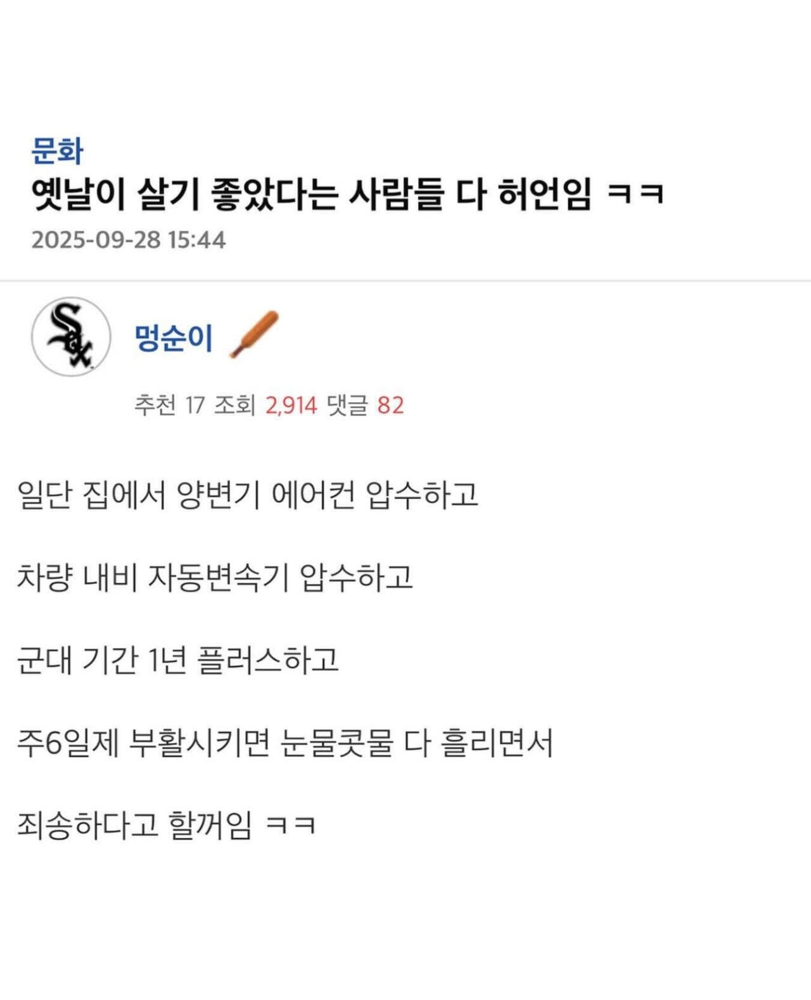

압-수

압-수
우리 부모님들이 그런 거지같은 세상에서 키워주셨단걸로만으로도 효도를 해야하는 이유가 될거같다.
폰이랑 네비만 압수해도 저런 말 못함 ㅋㅋ
원래 없던거랑 있던걸 없애는 거는 아예 다른 차원인데
코로나 전이 더 좋긴 했는데
ㄹㅇㅋㅋ
옛날엔 일자리가 많았잔아
옛날 퀄리티의 일자리는 지금도 많음
이게 맞지 ㅋㅋㅋㅋ
그때 다들 취업하던 그런회사 공장 가게들은 지금도 많네 ㅋㅋㅋㅋ 안갈뿐
주6일, 8시 출근, 10시 퇴근?
아버지 세대처럼 추가 수당 없이 매일 야근이 기본에 주6일하면 지금도 일자리 많음ㅋㅋㅋ
다른건 다 버텨도 주 6일제는 정말 재미없는 인생일 듯
+지랄 맞은 야근에 잦은 회식
그땐 그게 노말이어서 아무렇지 않았지.
지금 돌아가라면 어우……..
있다가 없어지는거면 몰라도 그땐 다 그러고 살았으니까 뭐...
나 옛날이 좋았어 그땐 내가 젊었었거든
엣날이 좋았던건
내가 열심히 월급 모으면 서울에 집을 살 수 있다 라는 기대감정도뿐인듯
이웃간에 정은 훨씬 깊었지
주6일제가 아니라
주7일에 격주로 일요일 하루 쉬었음
예전에는 희망이 있었던게 다름. 동네 30넘어 결혼못하면 노총각 노처녀 소리 들었으니까. 누구나 결혼해서 애낳고 자가 마련하는게 당연시 됬었음. 요즘 취업률 보면 진짜 불쌍한걸 넘어서 미안할 지경임.
ㄹㅇ...미래가 보이는거랑 지금이랑 다르지
지금은 편리해진건 많지만 미래는...
당연히 지금이 더 편리하고 살기 좋지. 그때를 그리워하는 틀딱들이 왜 그리워하는지 그 이유중 하나쯤을 말한것 뿐임.
행복도가 더 높았던거는 맞음 SNS로 남과 비교 하기 쉬워지면서 행복도가 많이 낮아진듯
옛날엔 근무가 시간만 많이 들지 노동력이 많이 드는건 생산직 밖에 없었음
요컨데 사무직 기준으로 그당시 일주일치 업무량을 지금은 하루만에 해결 해야함
노동력 소모는 단순히 7배에서 10배 늘었는데
급여는 끽해야 2배 2.5배 늘었음
물가는 20배 가까이 늘고
그러니 지금은 집가서 쓰러지고 회식도 없어짐
그시절엔 소위 조팽이를 치고 야근을 해도 술처먹을 여유가 있었음
그시절엔 10년 일하면 자가정돈 적당히 해픈놈년도 샀음
지금은 20년 돈의호흡써도 자가 못사서 대출받아야하는데 벌이 적다고 대출이 안나옴
엥 그러면 10년일한사람 다 자가 있겠네요?
토요일에도 학교갔어 ㅋㅋ
한달에 한번 ci활동인가?
애들과 클럽활동한다고 영화나 요리 볼링 치러 갔음
요즘은 토요일 그냥 쉬는거고
0교시랑 야자가 없음
시벌 ㅋㅋ좋겠덩